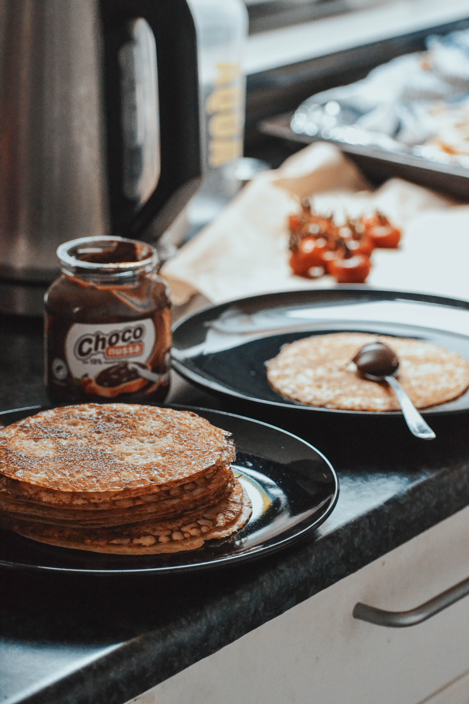

Chocolate Pancakes

Description
These rich, fluffy chocolate pancakes are the ultimate weekend breakfast luxury. Made with standard pantry staples and dark cocoa powder, they deliver a deep chocolate flavor that satisfies any sweet tooth right from the morning gridle.
They are quick to whip up from scratch, wonderfully moist on the inside, and pair perfectly with fresh fruit, whipped cream, or a drizzle of warm chocolate syrup.
Ingredients
- 1 cup all-purpose flour
- 1/3 cup unsweetened cocoa powder
- 1/4 cup granulated sugar
- 1 teaspoon baking powder
- 1/2 teaspoon baking soda
- 1/4 teaspoon salt
- 1 cup milk
- 1 large egg
- 2 tablespoons melted butter or vegetable oil
- 1/2 cup chocolate chips (optional)
Steps
- In a large bowl, whisk together the flour, cocoa powder, sugar, baking powder, baking soda, and salt until completely combined.
- In a separate bowl, whisk together the milk, egg, and melted butter.
- Pour the wet ingredients into the dry ingredients mix and gently stir with a spatula just until combined. Be careful not to overmix; some small lumps are perfectly fine. Fold in chocolate chips if using.
- Heat a non-stick skillet or griddle over medium heat and lightly grease it with a little butter or oil cooking spray.
- Pour roughly 1/4 cup of batter onto the hot skillet for each pancake. Cook until small bubbles form on the surface (about 2-3 minutes), then gently flip and cook for another 1-2 minutes until cooked through.
- Serve hot immediately with your favorite toppings like maple syrup or fresh berries!